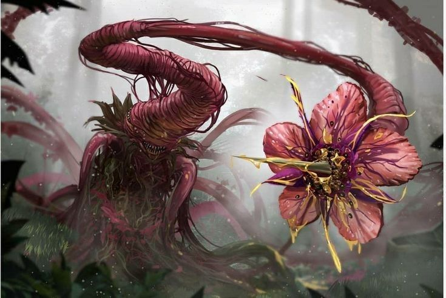

Thorn Thicket
Stats:
HP: 800
MP: 0
PHY STR: 18
PHY DEF: 20
MG STR: 0
MG DEF: 5

Thorn Thicket Skills:
- Briar Bolt (Offensive) (Level 0) - Fires a barrage of thorny projectiles at a single target, dealing 350 DMG. Each projectile has a 20% chance to apply a Low-Tier Poisoned status effect for 3 turns.
- Hedge Maze (Support) (Level 5) - Creates a tangled maze of thorns around the Thorn Thicket, granting it a 25% increase to PHY DEF and a 10% increase to MAG DEF for 4 turns. Enemies that attack the Thorn Thicket while the maze is active take 100 DMG per attack (Can only be used once per battle).
- Prickling Barrage (Offensive) (Level 15) - Hurls a volley of razor-sharp thorns, dealing 400 DMG to all enemies. Enemies hit by the attack take a 35% increase in damage taken from the Thorn Thicket's next attack (Can only be three times per battle once per battle).
- Thorny Armor (Support) (Level 20) - Reinforces the Thorn Thicket's natural armor with a dense layer of thorns, increasing its PHY DEF by 45% for 5 turns. While active, the Thorn Thicket gains a 35% boost to damage dealt to enemies with the Poisoned status effect. (Can only be used once per battle)
- Entangling Roots (Offensive) (Level 30) - Summons a mass of twisting, thorny roots to ensnare a single target, dealing 450 DMG and rooting them in place for 3 turns (Turn skip effect only works once per battle). The rooted target takes 100 DMG per turn from the roots.
- Prickly Quills (Offensive) (Level 40) - Releases a cloud of razor-sharp quills around the Thorn Thicket, dealing 600 DMG to all enemies in a large area. Enemies present take 100 DMG per turn and have a 30% chance to suffer a Mid-Tier Poisoned status effect for 5 turns (DMG per turn cannot stack).
- Thorny Barrage (Offensive) (Level 50) - Fires a barrage of massive thorns at a single target, dealing 750 DMG. Each thorn has a 20% chance to apply the High-Tier Poisoned status effect for 5 turns (Can only be used once per battle).
- Thorn's Wrath (Support) (Level 55) - Enrages the Thorn Thicket, increasing its PHY ATK and MAG ATK by 30% for 4 turns. While enraged, the Thorn Thicket gains a 10% boost to damage dealt to enemies with the Poisoned status effect (Can only be used once per battle).
- Thorny Rage (Offensive) (Level 65) - Channels the monster's rage into its thorns, increasing the damage of the Thorn Thicket's next physical attack by 50%. The increased damage also has a 60% chance to apply the High-Tier Poisoned status effect for 3 turns (Can only be used twice per battle).
- Prickling Aura (Support) (Level 70) - Surrounds the Thorn Thicket with a field of razor-sharp thorns, increasing the damage taken by enemies that attack it by 30%. The field persists for 5 turns and has a 20% chance to apply the High-Tier Poisoned status effect to attacking enemies for 3 turns (Can only be used once per battle).
- Briar Beast (Support) (Level 75) - Transforms the Thorn Thicket into a monstrous, thorn-covered abomination for 5 turns. In this form, the Thorn Thicket gains a 40% boost to all stats and a 20% boost to damage dealt. Enemies that attack the Briar Beast take 100 DMG and have a 40% chance to suffer the High-Tier Poisoned status effect for 5 turns (Can only be used once per battle).
- Thorn Thicket's Apotheosis (Offensive) (Level 100) - Deals 1500 DMG to all enemies and applies the Cursed status effect for 10 turns, and causes them to take a 30% boost to damage (Can only be used once per battle).